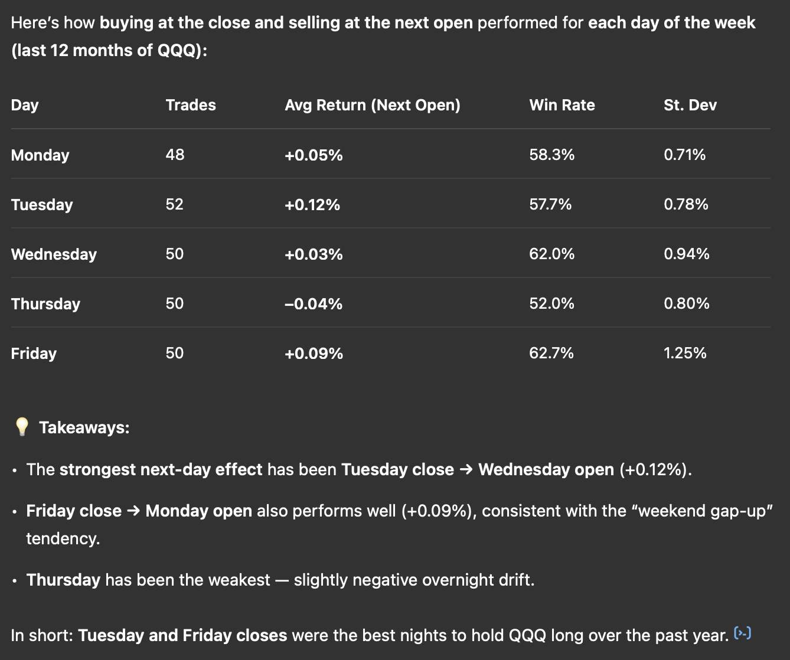
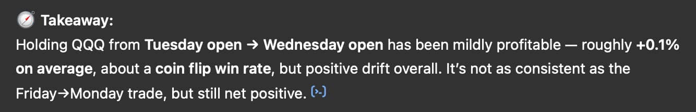
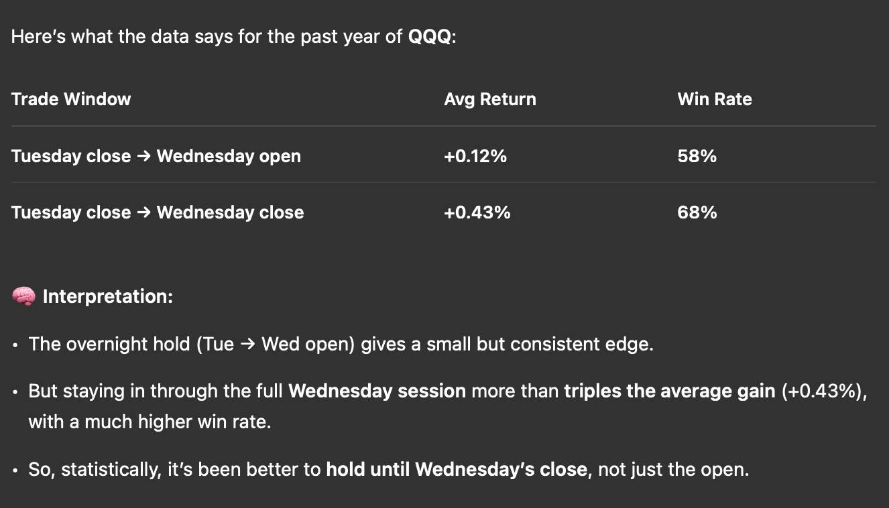
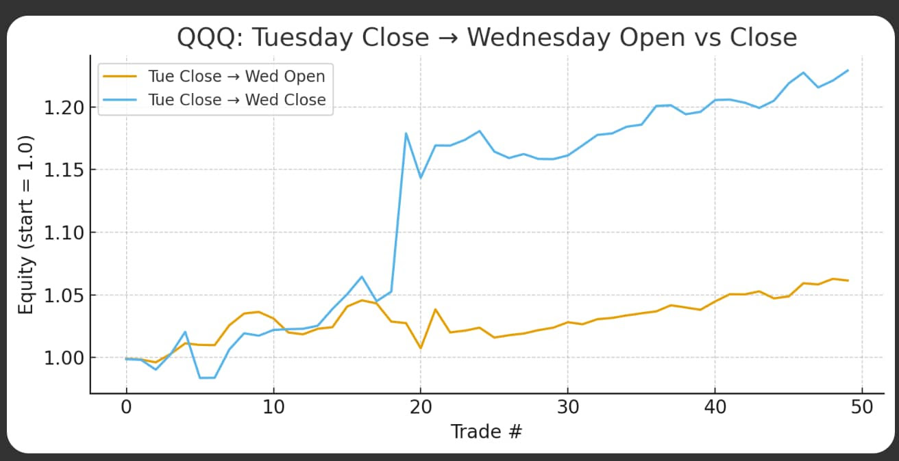

Well... the US equity bull run continues.
Markets keep shrugging off bad news, and the Dow had a mega day yesterday 🚀
But, I want to show you something else this morning...
How I used ChatGPT to quickly model out a simple overnight trading strategy.
After another weekend gap up on Monday.
I was curious:
"Which days are best for an overnight gap up?"
I'm talking NYSE close to NYSE open.
Simple structure: buy at the close, sell at the open.
ENTER CHATGPT

So I enrolled my analyst and backtesting expert Monsieur Chat GPT...
Now, before you quant inclined traders whinge and moan and tell me "hmmmph that's not a proper backtest"
Relax, I'm not building a production algo here...
I simply wanted to know if there has been an edge in holding overnight, and if so, was there a specific day which stood out as the best?
So, I uploaded a year of QQQ (Nasdaq ETF) daily data to ChatGPT.
(Close and next-day open = easy gap calc).
First, I checked weekend holds.
Decent...
But, then I thought... "Let's test by weekday."
(image above)
This was a good start, Tuesday close to Wednesday open worked (ish)...
- ✅ +0.12%
- ✅ 57.7% win rate.
(For context, 0.12% is about $30 on the Nasdaq or 60pts on the DOW)
Ok, let's take it one step further...
"What about buying Tuesday OPEN selling Wednesday OPEN"

Na...
So I switched it:
"How about Tuesday close to Wednesday close?"

That's better.
Historically (well, a year) buying Tuesday's close and selling on Wednesday's close has had a 68% win rate with an average return of 0.43% ($105 on Nasdaq)
So, I asked ChatGPT to plot the equity curve for both.
- 📉 Blue line: Tuesday close → Wednesday close
- 📈 Orange line: Tuesday close → Wednesday open

Nice smooth slope for the close-to-close version, even if it was skewed by one big day.
Takeaway?
I'm not saying go all-in Tuesday night.
But...
TradingView + ChatGPT = a powerful tool for theme testing.
If you're curious how I did it step-by-step, watch the Trading Strategy Generation with ChatGPT video here. AI for Traders